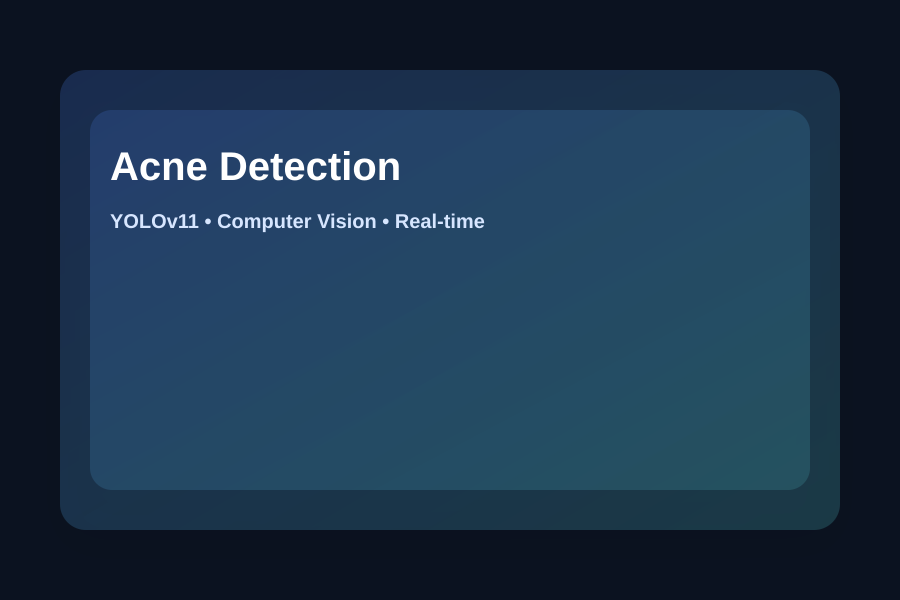

Real-Time Acne Detection using YOLOv11
Personal Project • Computer Vision • Roboflow
Developed a real-time acne detection system using YOLOv11n and webcam-based object detection.

Dataset: ~800 images (Roboflow + self-collected).
Classes
Pustule
Papule
Nodule
Non-acne
Methods
- Manual labeling in Roboflow
- YOLOv11n training
- Webcam-based real-time inference
- Evaluation using confidence score and mAP50
Tech Stack
Python
YOLOv11n
Roboflow
OpenCV